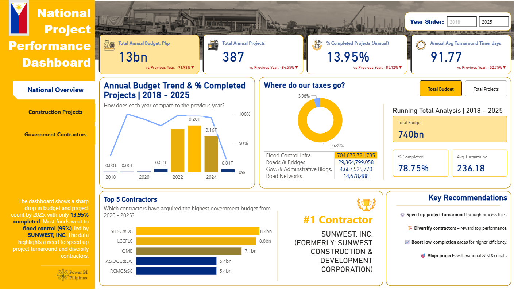
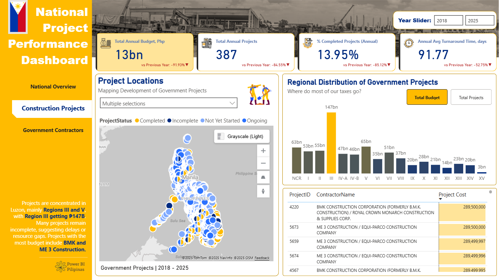
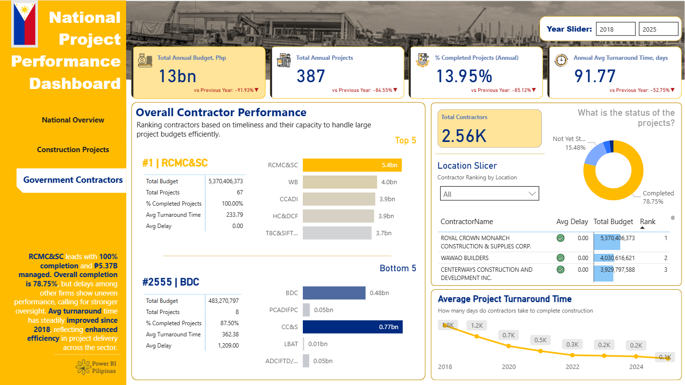

Monitors project progress, costs, and efficiency metrics to evaluate
performance across Philippine initiatives.
Overview
This three-page Power BI dashboard provides a comprehensive analysis of Philippine government infrastructure projects from 2018 to 2025, covering ₱740 billion in total budget across 13,000+ projects and 2,560+ contractors. It was built to give government oversight bodies, policy analysts, and citizens a transparent, data-driven view of how public funds are allocated, which contractors are performing, and where execution gaps exist. The dashboard directly addresses the need for accountability and efficiency in public infrastructure spending.

Business Question
The Philippine government manages thousands of infrastructure projects annually across 17 regions, yet decision-makers often lack a unified view of budget utilization, project completion rates, and contractor performance. On year 2025, only 13.95% of projects completed and an average turnaround time of 91.77 days, identifying bottlenecks, underperforming contractors, and budget concentration risks is critical — but difficult without consolidated, visual analytics. This dashboard was built to surface those blind spots and support data-backed governance decisions.
Key Insights & Features
-

- Core KPIs Tracked
-
Year 2025: Total Annual Budget (₱13bn), Total Projects (387), % Completed Projects (13.95%), and Average Turnaround Time (91.77 days) — each benchmarked year-over-year to highlight performance trends and declines.
- Budget Allocation & Trend Analysis
-
Annual budget trend from 2018–2025 paired with completion rate overlays, revealing a sharp post-2020 drop in both budget and project count — with flood control infrastructure absorbing 95.39% of total funds (₱704.67bn)

- Regional Distribution & Geospatial Mapping
-
An interactive Philippines map plots project status (Completed, Incomplete, Not Yet Started, Ongoing) by location, with a regional bar chart confirming Region III dominates at ₱147bn — enabling geographic equity analysis.

- Contractor Performance Ranking
-
Top 5 and Bottom 5 contractors ranked by total budget, project count, completion rate, and average delay — with RCMC&SC achieving 100% completion on 67 projects and BDC flagged for a 1,209-day average delay.
- Interactivity & Filters
-
Year range slider (2018–2025), location slicer for contractor ranking by region, project status filter, and toggle between Total Budget and Total Projects views across all pages.
- Analytical Approach
-
Descriptive (what happened), diagnostic (why completion rates are low), and comparative (contractor and regional benchmarking) — supported by running totals, YoY variance metrics, and ranked performance tables.
| Tool | Usage |
|---|---|
| Power BI | Dashboard design, report pages, interactivity |
| DAX | KPI calculations, YoY/MoM comparisons, margin metrics |
| Power Query (M) | Data transformation and modeling |
| Excel | Source data preparation |
| Data Modeling | Star schema with fact and dimension tables |
Impact & Value
This dashboard transforms raw government project data into a public accountability tool — enabling analysts and policymakers to instantly identify which contractors are delivering results, which regions are over- or under-resourced, and where budget is concentrated at risk. By surfacing that just one category (Flood Control) absorbs 95% of funds and that overall completion remains critically low, the dashboard creates a factual foundation for procurement reform, contractor diversification, and resource reallocation. For a data analyst portfolio, it demonstrates the ability to handle large-scale public sector data, build multi-page narrative dashboards, and deliver insights that drive real policy impact.